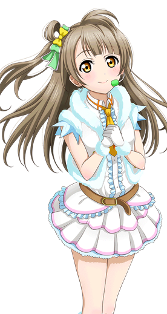
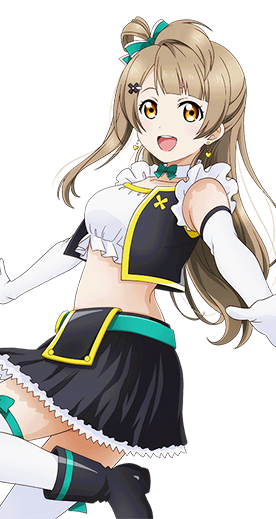
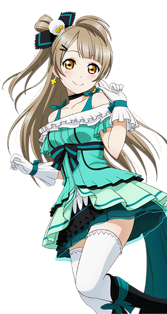
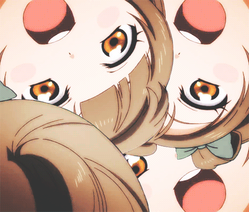

南 小 鸟
———Kotori Minami———
| 中文名 | 南小鸟 | 就读学校 | 音乃木坂学院 |
| 外文名 | 南 ことり (みなみ ことり) |
年 级 | 高中二年级 |
| 别 称 | 南琴梨（台译）、小琴、 小鸟、小鸟酱、(・8・) |
所属团体 | μ's、Printemps |
| 配 音 | 内田彩 | 擅长科目 | 英语、现代国语 |
| 生 日 | 9月12日(处女座) | 擅长料理 | 土豆炖肉、豆腐沙拉 |
| 年 龄 | 16岁 | 儿时梦想 | 幼儿园老师 |
| 性 别 | 女 | 属 性 | 天然呆、人妻、 天然萌、天然黑 |
| 身 高 | 159cm | 专用表情 | (・8・) |
| 出生地 | 日本东京都 | 印象色 | 银灰色 |
| 三 围 | B80/W58/H80 | 应援色 | 白色 |
- 
- 
- 
角色背景
南小鸟，16岁的少女。高中2年级。和高坂穗乃果、园田海未是青梅竹马，从幼儿园时期开始就一直在一起。是穗乃果的最好的朋友（小说中则是海未）。与穗乃果相对照的性格文静温柔，脾气很好，学习上也十分优秀的优等生。
相貌衣着
一头亚麻色的柔顺长直碎发，左斜直刘海，右侧半扎着侧马尾，明绿色的蝴蝶结发带，琥珀瞳。有着让人看起来舒服的漂亮天然萌容颜，并且有着很有特色，让人过目难忘的发型，身材纤细；有着温暖阳光、开朗元气的笑容和温柔阳光的性格。脸上总是挂着温暖阳光的笑容，是属于天然类型的元气女孩。
在校期间会身着音乃木板学院的校服。胸前系着代表二年级的红色花纹领结，蓝色西服，裙子则是蓝色格子百褶裙。平时通常穿着浅黄色与浅绿色调的私服，而演出时则穿着各式可爱华丽的衣装。
性格特点
性格文静温柔，脾气很好，与穗乃果形成鲜明对比。虽然文静内向但是内心坚强，并不会胆小怕事。主见性比较差，面临选择时会犹豫不决，因此需要穗乃果这样笔直向前冲的同伴引领。
在小说中还有些许腹黑性格。
动画版南小鸟性格：
个性开朗乐观，温柔勇敢且内心坚强。虽温柔且主见性较差但并不优柔寡断。擅长安慰人，会在大家感到灰心时站出来安慰大家。性格随和乐观，明快温柔，虽然性格有些偏内向，有些稳重但落落大方并不十分羞涩且内心开朗和很勇敢，虽外表温婉文弱但内心十分坚定，敢于承担也不易动摇，小事上比较随和从众，大事上主意拿得很定。属于典型的外柔内刚性格。因为反应有点迟钝所以总是被人说天然，让人觉得有点笨手笨脚的。小鸟平时看起来温柔且天然呆，事实上却是个轻微天然黑的角色，上课曾偷拍过穗乃果睡觉的样子，因为要取材，还跟穗乃果等人说’‘上课偷拍什么的真是让人小鹿乱撞。’'当时小鸟说句话时显得有些小腹黑，有时也有些搞怪（动画中有体现）。性格不怎么突出但让人觉得可爱，恰到好处地温柔，坚强，调皮（天然黑这点可体现），聪慧，贤良。正常情况下是很开朗的，但也有少见的软妹性格。非常喜欢软绵绵的东西，审美观奇特，居然对学校的两只羊驼十分着迷。
漫画版南小鸟的设定：
在漫画版中，小鸟是无论待谁都温柔可亲的治愈系。但不管是哪一版本，小鸟都有着这样的性格。没有软妹性格，但有些小腹黑。小鸟在漫画版中担任保健委员。起初因为自己认为加入校园偶像衣服就可以随便做，随便穿，因此爽快地答应了穗乃果的邀请。
学园偶像日记（school idol diary）中的南小鸟：
在学园偶像日记中，南小鸟写到：自己被大多数人认为是成熟稳重的女孩，但其实自己很喜欢Cosplay,喜欢甜甜的糕点，喜欢可爱梦幻的偶像和可爱的东西，非常喜欢迷你裙且喜欢穿得很可爱的风格。是个内心很可爱的女孩。也很喜欢和朋友们嬉闹。因为喜欢角色扮演，所以也有在关注校园偶像，因此相当了解校园偶像是什么。另外，南小鸟还是个腹黑的角色。自己曾认为穿着和服，拿着木刀的武士形象海未虽然很帅气，“比起穿着帅气袴裙摆出胜利姿势的海未，反而是颓丧地跪倒在地，泛起懊悔泪水说著「我输了……」的海未要更帅气、更出色、更漂亮。”但自己还是认为''败北海未''的称号更加适合海未。认为满眼泪水让人忍不住想去摸摸头的输家「小败海」真的非常可爱，因此悄悄地为海未做了个颓丧布偶，还挂在自己的房间桌上那盏台灯上摇晃着。可见小鸟外表天使，内心却如恶魔般的腹黑程度。
小鸟家原本是住在东京偏西边的地区，由于妈妈在那一年决定接任音乃木坂学院的理事长一职，为了替将来忙碌的工作做准备──而选择住到位于老家的这所学校附近。是在上小学前不久，才来到秋叶原这条街。
在小鸟的左膝内侧，有一道大约三公分的浅色伤疤，小时候偶尔会拖着脚走路，也曾经因为这个原因而被捉弄。虽然小鸟说“并没有要刻意隐瞒的意思，只是觉得没有必要也没机会提起这件事──我只是想和大家一样，做个普通的女孩子。毎当我想要告诉大家实情时，脑中就会反射性地浮现以前那些令人烦闷的过往──所以才会下意识地隐瞒，虽然就连自己都觉得这样不太好。“因为膝盖有伤疤的原因导致内心有点轻微的小自卑，为了避免他人同情而强装开朗。可见小鸟虽常常面带笑容但开朗的外表下却有着不为人知的悲伤。
对于小鸟克服膝盖伤疤的事，海未对小鸟的评价是：“虽然琴梨时常说自己是最普通又胆小的女孩，不过我认为，琴梨是在关键时刻拥有坚强心灵的人喔。”
南小鸟自我介绍：
成为偶像什么的，小鸟完全没有自信啊……不过大家已经说好了要一起努力的，小鸟也要加入大家成为一份子才行！只是，小鸟一直被大家叫作天然什么的，反应总是会有点迟钝。小鸟觉得要是再不努力点的话，就要被大家抛在后面啦！不过，小鸟真的很喜欢唱歌，也很喜欢跳舞，所以小鸟一定会拼命练习的！小鸟也想像大家一样跳出充满活力的舞步呀～
角色生活
平时喜欢做点心和做服饰，对于cosplay也有着非常浓的兴趣（参加μ's就有着cosplay的因素在内）。喜欢吃芝士蛋糕，讨厌大蒜。
身体柔韧性特别好，可以把脚放到肩膀上。服装制作也是一流，曾被名门设计师选上；视服装如命，负责μ's的舞台服装设计。周末时会去音乃木阪小学合唱团担任志愿者。
和穗乃果、海未是从小的玩伴，不过海未和穗乃果是从妈妈肚子开始就是好朋友了，而小鸟是幼儿园时期搬到千代田区才和两人结识。每当穗乃果和海未撕破脸吵起来的时候总是会在中间劝解。在小说里因为小鸟而吵架的事情一次也没有发生过，所以稍稍有些羡慕果海偶尔会吵架。
小时候由于天生左脚就有问题，有时候会出现跛脚的现象，因此被嘲笑过，五岁时并且因此动过手术，为了掩盖疤痕，经常穿裙或者过膝袜。在一次例行检查时碰见海未，跟海未讲述了自己的秘密后被海未解开心结，虽然现在依旧留有伤疤，不过小鸟已经能坦然面对。
声优的信
這是我第一次寫信。總覺得有些不可思議…！雖然覺得自己一定寫不好，但是我會以我所想的去寫寫看。我能寫好嗎…… 與你初遇是在2010年！！已經五年了哦！！居然一起度過了這麼長的時光，真是嚇到我了呢！最開始便一直在思考『南小鳥』會是怎樣的一個孩子呢？」
「來塑造南小鳥這個孩子的是我啊」抱著這樣的想法在心裡做下決定。讓小鳥充滿魅力的閃耀等等是由聲優的我來塑造...什麼的。讓大家看到一個「在九名成員的女孩子之中，不會輸給任何人，除了我以外誰也無法演繹」的南小鳥，我想演繹出這樣的你。LOVELIVE！有很多時候要露臉，一開始我非常的抵抗。不會破壞你的印象嗎，我很怕會變成這樣。舞蹈也是，擔心著「我能跳好嗎？」但在那個時候，你一直在我身邊給我帶來了元氣。
我不是1個人在奮鬥，還有「南小鳥」這個角色的陪伴，我會加油的。最重要的是、一定要充滿自信！唱歌也好舞蹈也好，要全身心演繹好你。作為聲優，我從未有過如此愉快的經歷！像這樣，與你一起、一心同體閃耀著。而最了不起的地方在於。。。LoveLive!的Live、真的是可以稱之為夢想的結晶！作為「聲優」的我們，一直將其作為目標而不斷努力去實現。能與「南小鳥」這個角色相遇，我真的很幸福。假如，與你相遇的時機哪怕是再差那麼一點點，你的聲優恐怕就變成了其他人了…現在想起來，要好好向與你相遇這件事道聲感謝，同時，也想表揚一下至今以來努力演繹你的自己…能夠作為「南小鳥」的聲優（這份經歷）是我人生的寶物。你是怎麼想的呢？我被選為你的聲優，你是否也覺得這段經歷非常開心呢？
同樣的，如果你能這樣想我就太高興了，從今以後我也要繼續為了做出不讓你丟臉的表現而努力！LoveLive！一路走來真的實現了各種夢想呢。還記得嗎？LoveLive！第一次舉辦活動的時候…我對來參加活動的大家說了「總有一天會成為讓大家為今天來這裡這件事而驕傲的作品！」的宣言呢，從那時開始一直和小鳥一起努力，到了現在已經得到了很多人的喜愛。真的好高興…從今以後也要一起讓LoveLive！得到更多人的認可，帶著大家的愛意加油哦！
寫給最愛的，我可愛的南小鳥様。